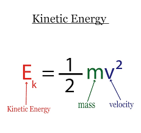
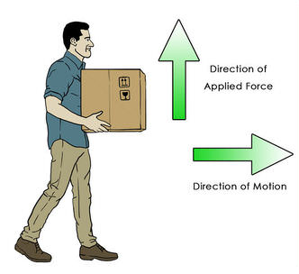

Definition: energy is the ablitiy to do work.
SI Unit: Joule (J)
Types of energy
kinetic energy
potential energy
gravitational potential energy (GPE)
chemical potential energy (CPE)
elastic potential energy (EPE)
nuclear energy
solar energy
sound energy
thermal energy (heat)*
Kinetic Energy
Definition: Kinetic energy is the energy that a body possesses due to its motion.
Formula:

potential energy
Potential energy is the energy that is stored in a body as a result of its position/condition.
Gravitational Potential Energy (GPE)
Definition: the energy stored in a body due to its elevated position
Formula:
Ep = mgh
m = mass (kg),
g = gravitational field strength (N/kg),
h = vertical height (m)
Other types of potential energy
Elastic Potential Energy (EPE)
Objects which can retain and return to their original shapes after pulling/pushing are known as elastic.
EPE is the energy stored in an object when it is pushed or pulled.
Chemical Potential Energy (CPE)
CPE is the energy stored in foods and fuels examples: aerobic respiration
Other types of energy
Nuclear energy
Nuclear energy is the energy stored in the nucleus of an atom.
Examples: nuclear fission (splitting of an unstable atom) and fusion (combining 2 atoms)
Sound energy
Sound energy is the energy of vibrations, which are detected as sound.
Thermal energy (heat)
Conservation of energy (Work done)
Definition: work is done only if an applied force moves the object in the same direction as the force.
When energy is transferred in such a manner, work is done through the application of a force.
Formula:
W = F × d
F = force (N), s = distance (m)

Warning: do not use newton-metres!